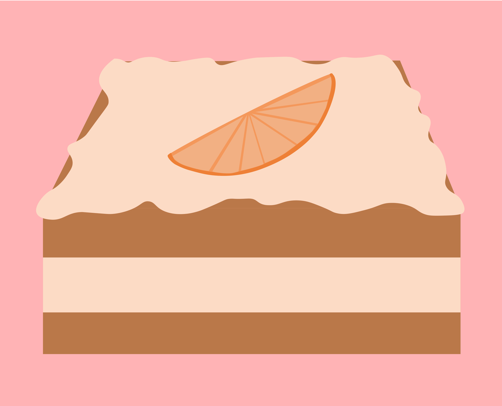

Ingredienser
Kage:
400 g sukker
400 g mel
2 tsk natron
1 nip salt
2 spsk kanel
2 dl Thise yoghurt med appelsin
1,5 dl Thise minimælk
125 g flydende margarine
2 æg
Frosting:
1 økologisk appelsin
2,5 dl Thise yoghurt med appelsin
1,5 dl flormelis
Fremgangsmåde:
Kom alle de tørre ingredienser i en skål og rør dem sammen. Kom derefter de resterende ingredienser i skålen og rør det hele sammen til en dej. Kom dejen i en lille bradpande ca. 20x30. Bages ved 180 grader i 30 min. Når kagen har kølet af i ca. 30 min, kan kagen skæres igennem og frosting kan kommes imellem de to dele kage, samt på toppen af kagen. Mens man venter på, at kagen køler af, kan man lave frosting. Kom skal fra én økologisk appelsin, samt appelsinyogurt og flormelis i en skål og pisk ingredienserne sammen med en håndmixer til det bliver en tyk ensartet masse. Tilsæt om nødvendigt mere flormelis. Stil frosting på køl indtil kagen er kølet ned. Kagen kan slutteligt pyntes med tynde appelsinskiver.